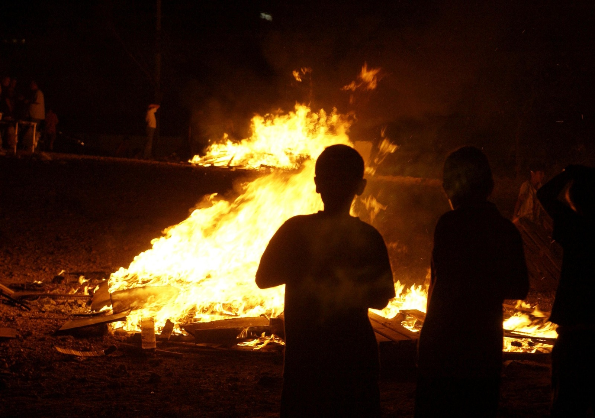
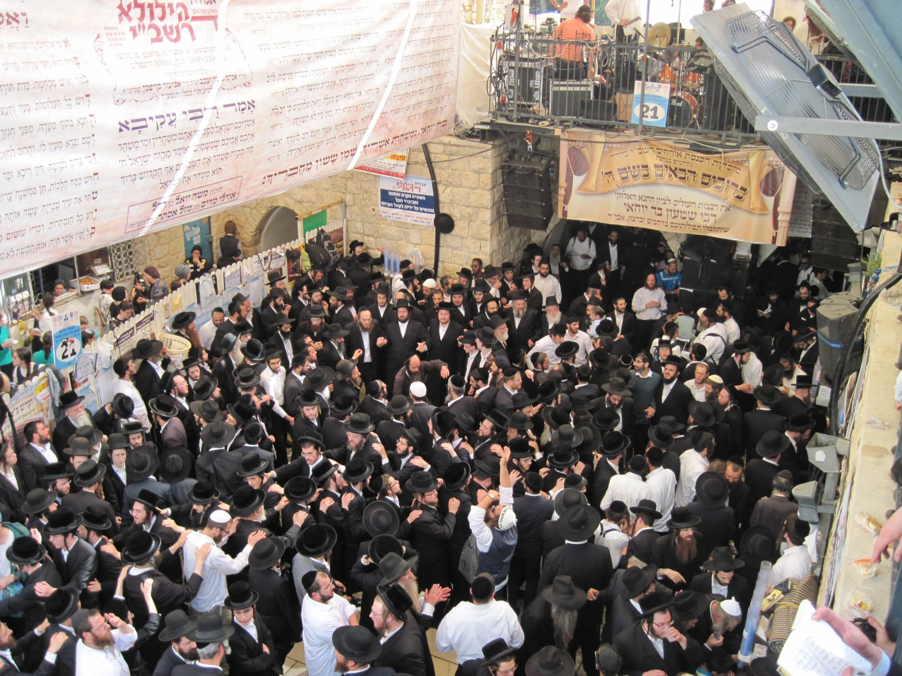
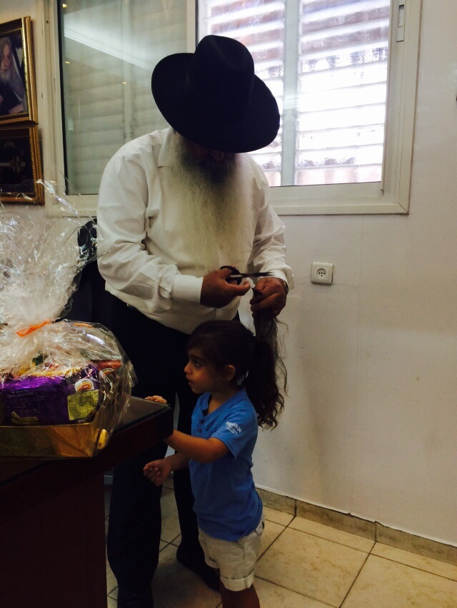

ל"ג בעומר נקרא כך משום שהוא למעשה היום השלושים ושלושה לספירת העומר.
שלושים ושלושה בגימטריה זה 33, ל'=30 ג'=3.
ל"ג בעומר
יום שני, י"ז באייר ה'תש"פ, 11 במאי 2020
"...ושכחת עומר בשדה..."
(דברים, כ"ד, י"ט)

אודות המועד
ל"ג בעומר הוא היום השלושים ושלושה (ל"ג) לספירת העומר ונחשב ליום שמחה מסורתי וכנקודת ציון להפסקת מנהגי האבלות הנוהגים בימי ספירת העומר. ל"ג בעומר אינו מוזכר במשנה ובגמרא, הוא מוזכר לראשונה בספרו של ר' אברהם בן נתן הירחי במאה ה-12. המסורת קשרה את ל"ג בעומר לאירועי גבורה במרד בר כוכבא וביום זה גם פסקה המגפה שפגעה בתלמידי רבי עקיבא.
אודות השם
מרד בר כוכבא
מרד בר כוכבא היה המרד הגדול האחרון של יהודי ארץ ישראל נגד שלטון האימפריה הרומית בין השנים 132-136 לספירה. בראש המרד עמד בר כוכבא שקיבל את הכינוי "בר כוזיבא" שפירושו איש השקר. סביב בר כוכבא התקבצו עשרות אלפי לוחמים בזכות התמיכה שקיבל מרבי עקיבא. תחילה בר כוכבא הצליח לשחרר את ירושלים ויהודי מידי הרומאים, אך הם שלחו אליהם כוחות גדולים ורבים מכל חלקי האימפריה. בסופו של דבר המרד דוכא במחיר כבד של כשש מאות אלף הרוגים. לפי האגדה, בר כוכבא עצמו מת מהכשת נחש בעקב רגלו.
מיתת תלמידי רבי עקיבא
מיתת תלמידי רבי עקיבא הוא מעשה שמקורו בתלמוד. מדוברת במוות של 24,000 מתלמידיו של רבי עקיבא, אשר מתו ממחלה אשר תוקפת את דרכי הנשימה מפני שלא נהגו בכבוד זה בזה. מיתת התלמידים הייתה בין חג הפסח לשבועות. בעקבות מותם נקבעו ימי ספירת העומר כימי צער ואבל לזכר מאורע זה. על פי המסורת, הפסיקו התלמידים למות ביום ל"ג בעומר, לכן ביום זה נפסקים ימי האבלות וזה למעשה סיבת השמחה ביום ל"ג בעומר.
מנהגי ל"ג בעומר
הדלקת מדורה
בערב ל"ג בעומר נהוג להדליק מדורות. למנהג זה יש שני מקורות: מרד בר כוכבא:
המורדים הדליקו משואות על ראשי ההרים כדי להודיע על פרוץ המרד. המדורות שאנו מדליקים הן לזכר און משואות.
השרפה בבית של רבי שמעון בר יוחאי וספר הזוהר:
על פי המסופר בספר הזוהר, ביום מותו של רבי שמעון בר יוחאי הוא ביקש לכלות לחבריו סוד מתוך ספר הזוהר-אך לא הספיק וביתו עלה באש. לזכר האש שעלתה בביתו נוהגים להדליק מדורות.

הילולת רבי שמעון בר יוחאי
יום פטירתו של רבי שמעון בר יוחאי מיוחס לל"ג בעומר, לכן במשך ל"ג בעומר והימים הסמוכים לו נוהרים מאות אלפים למקום ציון קברו אשר נמצא למרגלות הר מירון. שיאו של האירוע הוא הדלקת מדורה על גג הקבר ולאחר מכן מתחילים במקום ריקודי שמחה המוניים.

טקס החלאקה
טקס בו מספרים לראשונה ילדים אשר הגיעו לגיל 3. נהוג לעשות חלאקה במסגרת הילולת רבי שמעון בר יוחאי בהר מירון.

טיפים לבטיחות בל"ג בעומר
- אין לקיים מדורה מתחת לקווי חשמל וטלפון.
- אין לאסוף קרשים עם מסמרים או עם דברים בולטים העלולים לגרום לחתכים ופציעות.
- אין להיכנס לשדות עזובים ולמקומות נטושים - חשש להימצאות של נחשים או חרקים מזיקים.
- אין להיכנס לאתרי בנייה - חשש לנפילות, למכות, לחתכים ולחבורות.
- יש למקם את המדורה בשטח נקי מקוצים מעשבים, במרחק גדול ממבנים וממתקנים.
- יש לגדר את המדורה באבנים על מנת שהאש לא תתפשט.
- אין להעמיד את הקרשים במבנה גבוה מדי, הם עלולים ליפול בעת ההדלקה ולגרום לפגיעות ולכוויות.
- אין להשאיר בקרבת המדורה חומרים דליקים, מיכלי דלק או מיכלי גז.
- אין להשליך למדורה תרסיסים, קופסות שימורים, חזיזים, קליעי נשק או כל דבר העשוי מפלסטיק (בעת הבעירה פולט אדים רעילים).
- יש ללבוש מכנסיים ארוכים, חולצה עם שרוולים ונעליים גבוהות כדי להגן על הגוף מפני גיצים, גחלים ועקיצות זוחלים שנמשכים אל חום המדורה.
- לפני עזיבת המקום, יש לכבות היטב את האש, לפזר עליה חול או לשפוך מים על הגחלים. חשוב לבדוק ולוודא כי האש כבתה ולא נשארו גחלים בוערים.
שמרו על עצמכם, ואל תשכחו ליהנות...!